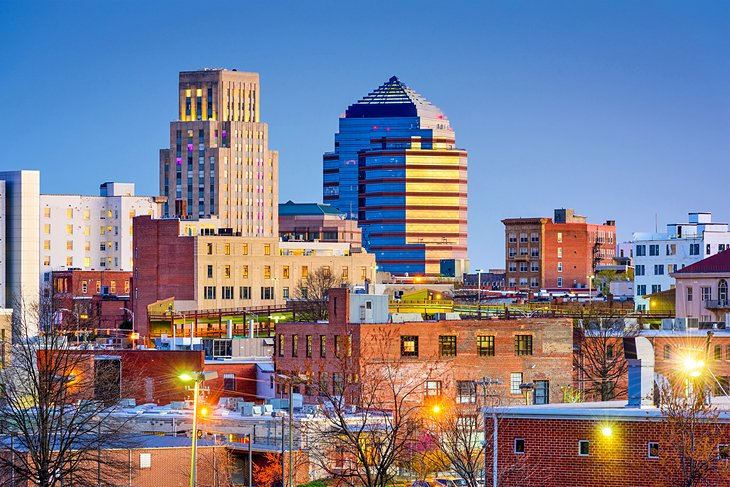

Explore the vibrant city of Durham.
Durham, North Carolina, known as the "Bull City," is a vibrant and diverse city with a rich history and a thriving cultural scene. Located in the heart of the Research Triangle region, Durham is home to world-renowned universities, including Duke University and North Carolina Central University, which contribute to the city's intellectual and innovative atmosphere. Durham is steeped in African-American heritage and played a significant role in the civil rights movement. Today, it embraces its multicultural roots, fostering a sense of inclusivity and celebrating its diverse community.
Durham boasts a flourishing arts and entertainment scene. The city is dotted with art galleries, theaters, and music venues that showcase local talent and attract national acts. Durham's revitalized downtown area, known as the American Tobacco Historic District, is a hub of activity with trendy restaurants, breweries, and shops. The city also offers ample outdoor recreational opportunities, with parks, trails, and the nearby Eno River State Park providing a natural escape for residents and visitors alike. With its blend of history, culture, and innovation, Durham offers a unique and dynamic experience for all who visit or call it home.
